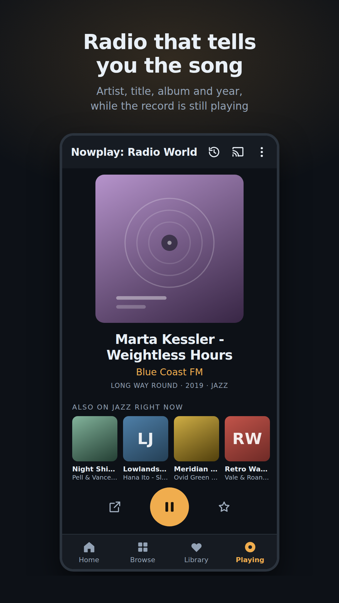
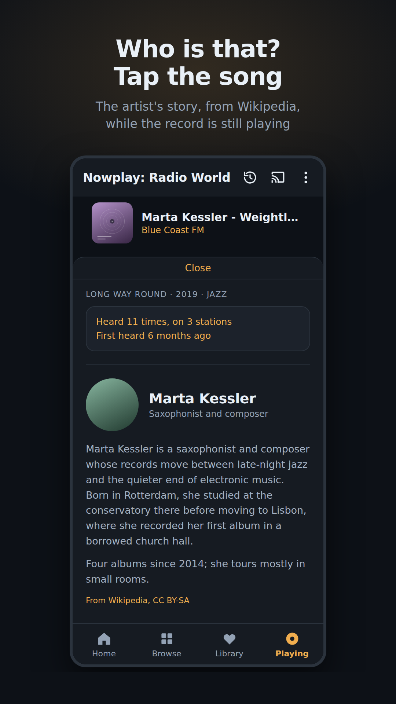
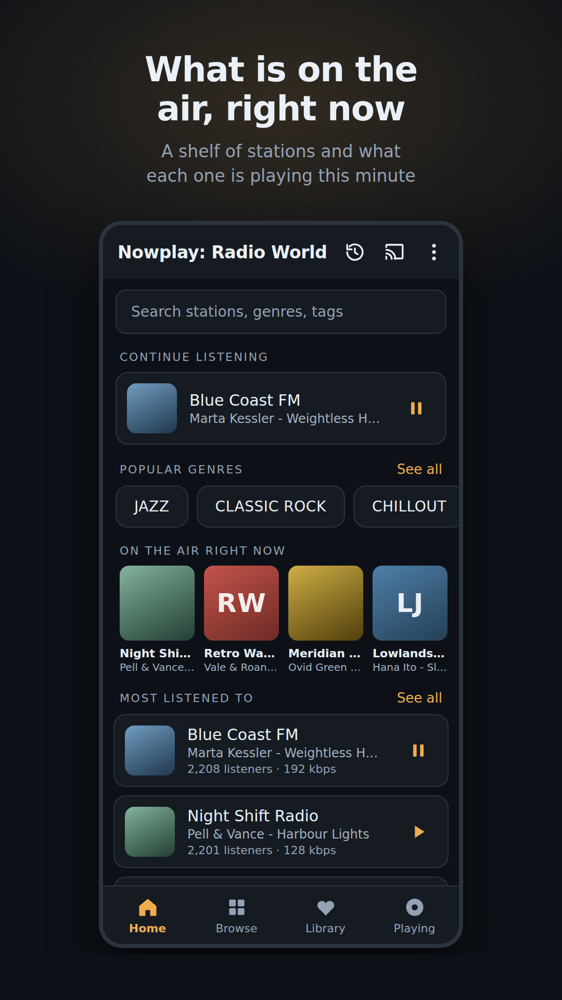
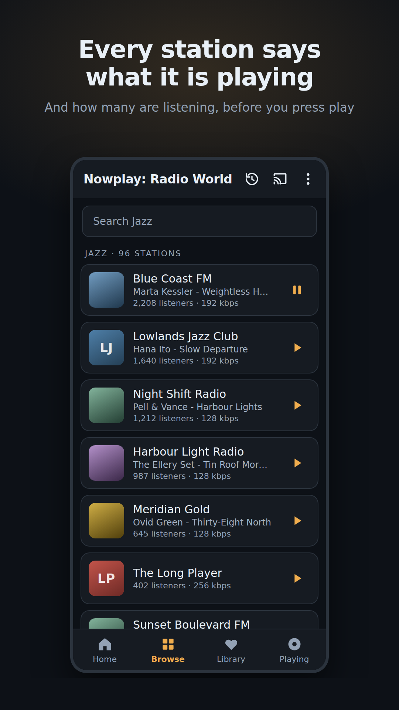
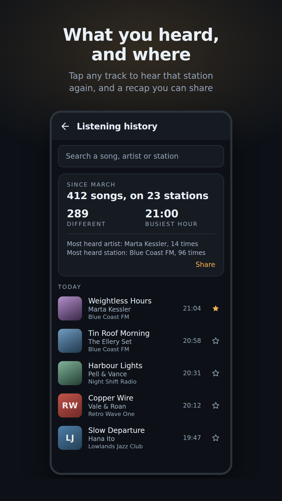

Radio that tells you the song
Internet radio with the artist, the title, the album and the year on screen while the record is still playing. Tap the song to read who the artist is. Every track you hear is remembered, with the station it was on.
Get it on Google Play
Who is that?
Tap the song and the artist's story comes up from Wikipedia, in your language, while the record plays.
On the air, right now
A shelf of stations and what each is playing this minute, checked every few minutes, for the whole world.
2,000+ stations that work
Every station is connected to and checked within the last week. Dead links are taken out before you meet them.



